1016C10 cylinder head - r + r and replace gasket
- Path
- Procedures > 10 ENGINE > 1016 CYLINDER HEAD/S > 1016C cylinder head - remove + re-fit > 1016C10 cylinder head - r + r and replace gasket
- Kind
- repair procedure (removal / refitting; the operation number is the code)
- Applies to
- all engines; all production periods
- Interactive page
- https://sloeber94.github.io/elrnDB-lYpsln/en/#/2428863
Applies to: engines: 1.2 8v; all production periods
 Removing
Removing
 Refitting
RefittingPlace the car on a lift.
Proceed with removal 5530B10 battery - r+r .
Proceed with removal 5530B52 Battery DRIP TRAY/SUPPORT - R.R. .
Proceed with removal 1048A10 air cleaner filtering element - replace .
Proceed with removal 1072C44 exhaust manifold heat shield on bulkhead - r+r .
Proceed with removal 1072C16 exhaust manifold with catalytic converter - r r .
1. Loosen band and disconnect the upper coolant inlet hose to the radiator thermostat side.
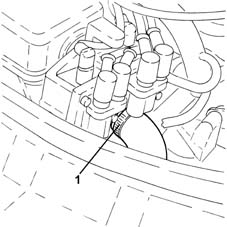
Applies to: engines: 1.2 16v; all production periods
Removing
RefittingProceed with removal 4450B04 right front wheel r r .
Proceed with removal 7055B66 Engine compartment DUST SHIELD protection in right front wheel arch - R.R. .
Proceed with removal 7055B91 Right front WHEEL ARCH LINER - R.R. .
Proceed with removal 1092B40 air conditioner compressor/alternator drive belt - r + r .
Proceed with removal 1092A10 Crankshaft services PULLEY - R.R. .
Proceed with removal 1048A10 air cleaner filtering element - replace .
Proceed with removal 1056B60 single fuel manifold pipe, with injectors - r + r .
Proceed with removal 1032B10 toothed timing belt - r + r for timing adjustment or replacement .
Proceed with removal 5530B10 battery - r+r .
Proceed with removal 5530B52 Battery DRIP TRAY/SUPPORT - R.R. .
Proceed with removal 1072C44 exhaust manifold heat shield on bulkhead - r+r .
Proceed with removal 1072C16 exhaust manifold with catalytic converter - r r .
Proceed with removal 1016B12 single cylinder head extension - r r with timing belt removed - replace .
1. Undo the bolts (1a) and remove the single cylinder head (1b).
Remove the cylinder head gasket.
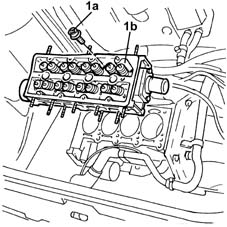
Applies to: engines: 1.4 16v; all production periods
Removing
RefittingProceed with removal 4450B04 right front wheel r r .
Proceed with removal 7055B66 Engine compartment DUST SHIELD protection in right front wheel arch - R.R. .
Proceed with removal 7055B91 Right front WHEEL ARCH LINER - R.R. .
Proceed with removal 1092B40 air conditioner compressor/alternator drive belt - r + r .
Proceed with removal 1092A10 Crankshaft services PULLEY - R.R. .
Proceed with removal 1048A10 air cleaner filtering element - replace .
Proceed with removal 1056B60 single fuel manifold pipe, with injectors - r + r .
Proceed with removal 1032B10 toothed timing belt - r + r for timing adjustment or replacement .
Proceed with removal 5530B10 battery - r+r .
Proceed with removal 5530B52 Battery DRIP TRAY/SUPPORT - R.R. .
Proceed with removal 1072C44 exhaust manifold heat shield on bulkhead - r+r .
Proceed with removal 1072C16 exhaust manifold with catalytic converter - r r .
Proceed with removal 1016B12 single cylinder head extension - r r with timing belt removed - replace .
1. Undo the bolts (1a) and remove the single cylinder head (1b).
Remove the cylinder head gasket.
Applies to: engines: 1.3 JTD; all production periods
Removing
RefittingPosition the vehicle on the ramp.
Drain the air conditioner coolant circuit 0010T84 coolant for air conditioning system dehydrate and recharge .
Proceed with removal 4450B04 right front wheel r r .
Proceed with removal .
Proceed with removal 7055B66 Engine compartment DUST SHIELD protection in right front wheel arch - R.R. .
Proceed with removal 7055B91 Right front WHEEL ARCH LINER - R.R. .
Proceed with removal 5530B10 battery - r+r .
Proceed with removal 5530B52 Battery DRIP TRAY/SUPPORT - R.R. .
Proceed with removal 1060G90 diesel injection wiring harness - r r .
Proceed with removal 1016B10 single cylinder head extension - change gasket .
1. Loosen the band and disconnect the upper coolant inlet hose to the radiator thermostat side.
2. Loosen the band and disconnect the oil vapour recirculation pipe from the rigid pipe.
3. Loosen the bands and remove the air intake pipe to the turbocharger.
4. Loosen the band fastening the coolant supply pipe to the engine oil heat exchanger, thermostat side.
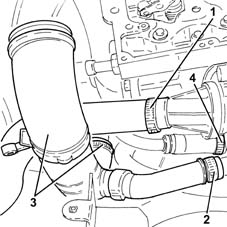
Applies to: engines: 1.2 8v; all production periods
1. Disconnect the electrical connection from the engine oil pressure warning light switch and move the electrical wiring aside.
 | Name | Connector |
|---|---|---|
1 | Engine oil pressure sensor (switch) |
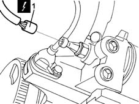
Applies to: engines: 1.2 16v; all production periods
Refitting
RemovingFit a new cylinder head gasket on the cylinder block.
1. Refit the cylinder head.
2. Tighten the bolts (2a) fixing the cylinder head to the recommended torque using the angular tightening tool (2b).
 | Fastening | Component | Ø | Value (daNm) |
|---|---|---|---|---|
2a | Bolt | CYLINDER HEAD | M9 x 1.25 | (Engine crankcase side) 2.0 + 3.0 + 90° + 90° |
 | Name | Country |
|---|---|---|
2b | Protractor | 1.860.942.000 |
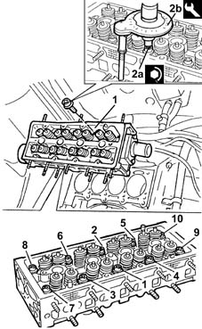
Applies to: engines: 1.4 16v; all production periods
Refitting
RemovingFit a new cylinder head gasket on the engine block.
1. Refit the cylinder head.
2. Tighten the bolts (2a) fixing the cylinder head to the recommended torque using the angular tightening tool (2b).
| Fastening | Component | Ø | Value (daNm) |
|---|---|---|---|---|
2a | Bolt | CYLINDER HEAD | M9 x 1.25 | (Engine crankcase side) 2.0 + 3.0 + 90° + 90° |
| Name | Country |
|---|---|---|
2b | Protractor | 1.860.942.000 |
Applies to: engines: 1.3 JTD; all production periods
1. Loosen the band and disconnect the pipe from the heat exchanger to the air chamber, chamber side.
2. Loosen the band and disconnect the coolant supply pipe to the climate control heater, E.G.R. system exhaust gas/water heat exchanger side.
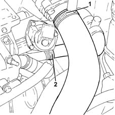
Applies to: engines: 1.2 8v; all production periods
1. Disconnect the electrical connection for the rpm sensor.
| Name | Connector |
|---|---|---|
1 | Rpm sensor |
2. Undo the bolt (2a) and move the cam angle sensor (2b) aside.
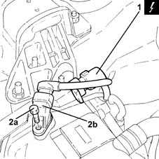
Applies to: engines: 1.2 16v; all production periods
Proceed with refitting 1016B12 single cylinder head extension - r r with timing belt removed - replace .
Proceed with refitting 1072C16 exhaust manifold with catalytic converter - r r .
Proceed with refitting 1072C44 exhaust manifold heat shield on bulkhead - r+r .
Proceed with refitting 5530B52 Battery DRIP TRAY/SUPPORT - R.R. .
Proceed with refitting 5530B10 battery - r+r .
Proceed with refitting 1032B10 toothed timing belt - r + r for timing adjustment or replacement .
Proceed with refitting 1056B60 single fuel manifold pipe, with injectors - r + r .
Proceed with refitting 1048A10 air cleaner filtering element - replace .
Proceed with refitting 1092A10 Crankshaft services PULLEY - R.R. .
Proceed with refitting 1092B40 air conditioner compressor/alternator drive belt - r + r .
Proceed with refitting 7055B91 Right front WHEEL ARCH LINER - R.R. .
Proceed with refitting 7055B66 Engine compartment DUST SHIELD protection in right front wheel arch - R.R. .
Proceed with refitting 4450B04 right front wheel r r .
Refill the engine cooling system with coolant 0010T20 coolant change .
Applies to: engines: 1.4 16v; all production periods
Proceed with refitting 1016B12 single cylinder head extension - r r with timing belt removed - replace .
Proceed with refitting 1072C16 exhaust manifold with catalytic converter - r r .
Proceed with refitting 1072C44 exhaust manifold heat shield on bulkhead - r+r .
Proceed with refitting 5530B52 Battery DRIP TRAY/SUPPORT - R.R. .
Proceed with refitting 5530B10 battery - r+r .
Proceed with refitting 1032B10 toothed timing belt - r + r for timing adjustment or replacement .
Proceed with refitting 1056B60 single fuel manifold pipe, with injectors - r + r .
Proceed with refitting 1048A10 air cleaner filtering element - replace .
Proceed with refitting 1092A10 Crankshaft services PULLEY - R.R. .
Proceed with refitting 1092B40 air conditioner compressor/alternator drive belt - r + r .
Proceed with refitting 7055B91 Right front WHEEL ARCH LINER - R.R. .
Proceed with refitting 7055B66 Engine compartment DUST SHIELD protection in right front wheel arch - R.R. .
Proceed with refitting 4450B04 right front wheel r r .
Refill the engine cooling system with coolant 0010T20 coolant change .
Applies to: engines: 1.3 JTD; all production periods
1. Undo the bolt (1a) and remove the complete engine oil dipstick tube (1b).
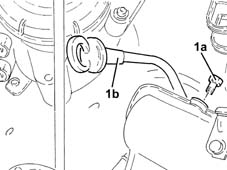
Applies to: engines: 1.2 8v; all production periods
1. Remove the protective cap (1a) for the fuel manifold vent valve (1b) and use the tool (1c) to discharge the fuel system pressure.
| Name | Country |
|---|---|---|
1c | Rapid connector | 1.870.684.000 |
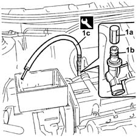
Applies to: engines: 1.3 JTD; all production periods
1. Undo the nuts (1a) and remove the exhaust manifold heat shield (1b) complete with engine lifting bracket (1c).
2. Undo the bolt fixing the coolant supply pipe to the engine oil heat exchanger, to the cylinder block/crankcase.
3. Undo the bolts (3a) for the coolant supply pipe to the engine oil heat exchanger (3b) complete with gasket (3c).
4. Undo the connectors (4a) and remove the turbocharer engine oil supply pipe (4b).
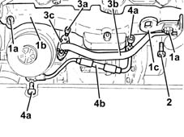
Applies to: engines: 1.2 8v; all production periods
1. Disconnect the accelerator cable (1a) from throttle valve drive (1b) by releasing from mounting bracket (1c) and move aside.
2. Disconnect the rapid attachment for the fuel supply pipe.
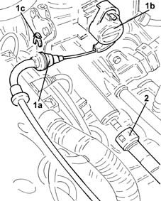
Applies to: engines: 1.3 JTD; all production periods
1. Loosen the band and disconnect the condensed engine oil recovery pipe, oil vapour separator side.
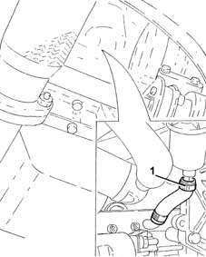
Applies to: engines: 1.2 8v; all production periods
1. Disconnect the electrical connection from the butterfly position sensor.
| Name | Connector |
|---|---|---|
1 | Throttle position sensor |
2. Disconnect the engine idle actuator electrical connection.
| Name | Connector |
|---|---|---|
2 | Idle actuator |
3. Undo retaining bolt (3a) and disconnect the earth on throttle body (3b).
| Name | Connector |
|---|---|---|
3b | Injection ECU earth |
4. Disconnect the electrical connection from the intake air temperature/pressure sensor.
| Name | Connector |
|---|---|---|
4 | Integrated air temperature sensor |
5. Disconnect the rapid attachment coupling for the fuel vapour recover pipe, solenoid side.
6. Disconnect the electrical connection from the inlet fuel vapour enabling solenoid valve.
| Name | Connector |
|---|---|---|
6 | Fuel vapour recovery solenoid |
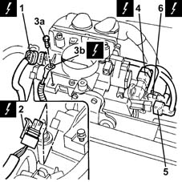
Applies to: engines: 1.3 JTD; all production periods
1. Loosen the bands and disconnect the coolant inlet and outlet pipes from the climate control system heater.
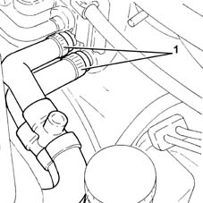
Applies to: engines: 1.2 8v; all production periods
1. Undo fastening levers (1a), then disconnect the electrical connection (1b) for the injection/ignition system control unit.
| Name | Connector |
|---|---|---|
1b | Engine management control unit |
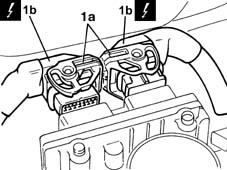
Applies to: engines: 1.3 JTD; all production periods
1. Undo the bolts fixing the water/exhaust gas heat exchanger for the E.G.R. system.
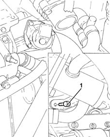
Applies to: engines: 1.2 8v; all production periods
1. Undo retaining clip (1a) and disconnect injector electrical wiring ducting pipe (1b) from slots (1c) on the cam cover.
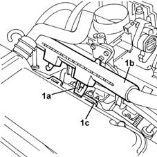
Applies to: engines: 1.3 JTD; all production periods
1. Working via the opening in the tappet cover, undo the bolt fixing the timing chain fixed plate to the cylinder head.
2. Undo the bolts fixing the timing cover to the cylinder head.
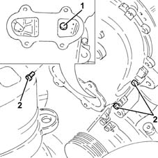
Applies to: engines: 1.2 8v; all production periods
1. Disconnect the electrical connections from the ignition coils.
| Name | Connector |
|---|---|---|
1 | Ignition 'coil |
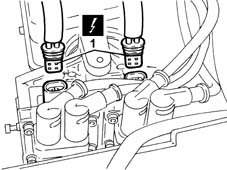
Applies to: engines: 1.3 JTD; all production periods
1. Undo the nuts fixing the turbocharger to the exhaust manifold.
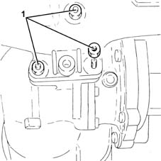
Applies to: engines: 1.2 8v; all production periods
1. Disconnect the oil vapour recovery pipe from the cam cover and move aside.
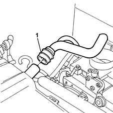
Applies to: engines: 1.3 JTD; all production periods
1. Undo the bolts (1a) and disconnect the air supply pipe between the turbocharger and the heat exchanger (1b), turbocharger side.
2. Remove the gasket.
3. Undo the bolts securing the engine oil return pipe from the turbocharger, engine crankcase side.
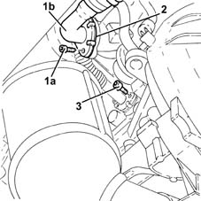
Applies to: engines: 1.2 8v; all production periods
1. Disconnect the electrical connections (1a) from the injectors and move the wiring ducting aside (1b).
| Name | Connector |
|---|---|---|
1a | Injector |
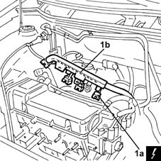
Applies to: engines: 1.3 JTD; all production periods
1. Tighten the nuts fastening the rigid section of the exhaust pipe between the catalytic converter and the silencer, silencer side.
Release the rigid pipe for the exhaust pipe between the catalytic converter and silencer from the silencer.
2. Loosen the collar (2a) and remove the rigid pipe for the exhaust pipe between the catalytic converter and the silencer (2b).
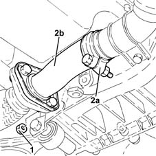
Applies to: engines: 1.2 8v; all production periods
1. Undo the fixing nuts (1a), open retaining collar (1b) and remove the wiring duct bracket (1c).
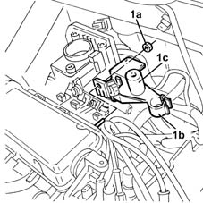
Applies to: engines: 1.3 JTD; all production periods
1. Undo the bolts fixing the catalytic converter mounting bracket to the manual gearbox/engine connecting bracket.
2. Rremove the turbocharger (2a) complete with catalytic converter (2b).
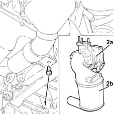
Applies to: engines: 1.2 8v; all production periods
1. Disconnect the electrical connection from the engine coolant temperature sensor.
| Name | Connector |
|---|---|---|
1 | Engine temperature sender unit |
2. Loosen the collar and disconnect the coolant supply pipe to the climate control system heater.
Disconnect the spark plug high tension leads.
Disconnect the electrical wiring from the sealing clips located behind the intake manifold.
3. Prise up one-way valve (3a) from the brake servo and release the pipe from collar (3b).
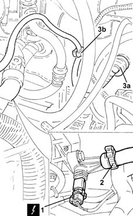
Applies to: engines: 1.3 JTD; all production periods
1. Undo the bolts (1a) and remove the complete cylinder head (1b).
2. Remove the cylinder head gasket.
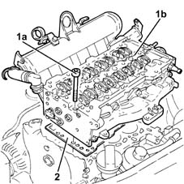
Applies to: engines: 1.2 8v; all production periods
1. Undo the nuts (1a) and remove the inlet manifold (1b) complete with throttle body.
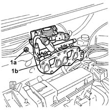
Applies to: engines: 1.3 JTD; all production periods
Refitting
Removing1. Measure the projection of the pistons at two points at 180° on the gudgeon pin axis using a dial gauge and take the average of the two figures measured for each piston.
| Name | Country |
|---|---|---|
1 | Dial gauge mounting | 1.870.404.001 |
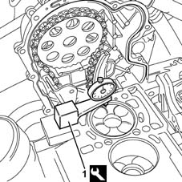
Applies to: engines: 1.2 8v; all production periods
Proceed with removal 4450B04 right front wheel r r .
Proceed with removal 7055B66 Engine compartment DUST SHIELD protection in right front wheel arch - R.R. .
Proceed with removal 7055B91 Right front WHEEL ARCH LINER - R.R. .
Proceed with removal 1008B10 power unit front mount (timing side) flexible block - replace .
Proceed with removal 1008A46 cam shaft left rigid mount - r r .
Proceed with removal 1032D12 timing system protective cover(s) - r + r .
Proceed with removal 1092B40 air conditioner compressor/alternator drive belt - r + r .
Proceed with removal 1092A10 Crankshaft services PULLEY - R.R. .
Proceed with removal 1032B10 toothed timing belt - r + r for timing adjustment or replacement .
Remove the engine oil filler plug.
1. Undo the bolts (1a) and remove the tappet cover (1b).
Remove the gasket.
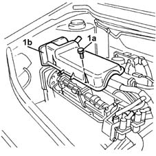
Applies to: engines: 1.3 JTD; all production periods
Select the correct size cylinder head gasket, according to the maximum value of the averages of the projection for each individual piston.
 | Measurement | Value | |
|---|---|---|---|
- | Gasket size (no opening) (mm) | 0.67 ÷ 0.77 | |
Maximum average piston projection (mm) | 0.028 ÷ 0.127 | ||
| Measurement | Value | |
|---|---|---|---|
- | Gasket size (one opening) (mm) | 0.77 ÷ 0.87 | |
Maximum average piston projection (mm) | 0.128 ÷ 0.227 | ||
| Measurement | Value | |
|---|---|---|---|
- | Gasket size (two openings) (mm) | 0.87 ÷ 0.97 | |
Maximum average piston projection (mm) | 0.228 ÷ 0.327 | ||
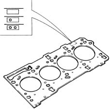
Applies to: engines: 1.2 8v; all production periods
1. Undo the bolts (1a) and remove the single cylinder head (1b).
2. Remove the gasket.
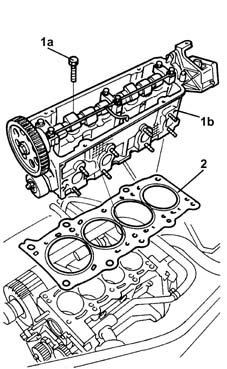
Applies to: engines: 1.3 JTD; all production periods
1. Apply fiat silicon sealant 71713687 or a similar product to the contact area between the cylinder block/crankcase and the timing cover.
2. Position the cylinder head gasket (2a) of the size selected previously on the cylinder block fitting it on the centering bushes (2b).
3. Apply Fiat silicon sealant 71713687 or a similar product to the cylinder head gasket in the contact area with the timing cover.
4. Also apply the same sealant to the surface in contact with the timing cover cylinder head gasket following the black silicon line on the actual gasket.
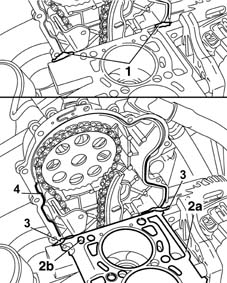
Applies to: engines: 1.2 8v; all production periods
Refitting
RemovingClean the cylinder head and crankcase contact surfaces.
1. Position the cylinder head gasket with the word 'ALTO' [TOP] visible to the fitter.
2. Place the cylinder head (2a) back in its housing and tightening the bolts (2b) to the recommended torque.
| Fastening | Component | Ø | Value (daNm) |
|---|---|---|---|---|
2b | Bolt | CYLINDER HEAD | M9 | (Engine crankcase side) 3.0 + 90° + 90° |
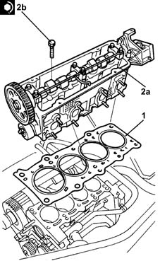
Applies to: engines: 1.3 JTD; all production periods
Place the cylinder head on the cylinder block/crankcase fitting it on the centering bushes.
1. Screw in the bolts shown fixing the timing cover to the cylinder head and tighten to the recommended torque.
| Fastening | Component | Ø | Value (daNm) |
|---|---|---|---|---|
1 | Bolt | TIMING COVER | M6 | 0.8 ÷ 1.0 |
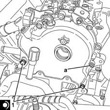
Applies to: engines: 1.2 8v; all production periods
Place the cam cover gasket in position.
1. Refit the cam cover (1a) and tighten bolts (1b) to the recommended torque.
| Fastening | Component | Ø | Value (daNm) |
|---|---|---|---|---|
1b | Bolt | CAM COVER | M6 | (Cylinder head side) 1.0 |
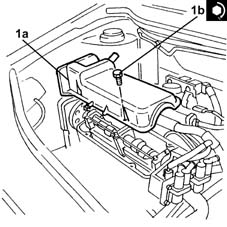
Applies to: engines: 1.3 JTD; all production periods
Place the cylinder head fixing bolts in the housings and screw them in partly without tightening them.
1. Tighten just the two bolts shown in the diagram fastening the cylinder head to the cylinder block/crankcase to the recommended torque of 2.5 daNm.
2. Loosen the bolts fixing the timing cover tightened previously.
3. Continue tightening the cylinder head fixing bolts to a torque of 2.5 daNm following the order illustrated in the diagram working gradually towards the timing cover.
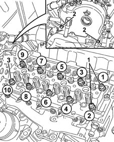
Applies to: engines: 1.2 8v; all production periods
Proceed with refitting 1032B10 toothed timing belt - r + r for timing adjustment or replacement .
Proceed with refitting 1092A10 Crankshaft services PULLEY - R.R. .
Proceed with refitting 1092B40 air conditioner compressor/alternator drive belt - r + r .
Proceed with refitting 1032D12 timing system protective cover(s) - r + r .
Proceed with refitting 1008A46 cam shaft left rigid mount - r r .
Proceed with refitting 1008B10 power unit front mount (timing side) flexible block - replace .
Proceed with refitting 7055B91 Right front WHEEL ARCH LINER - R.R. .
Proceed with refitting 7055B66 Engine compartment DUST SHIELD protection in right front wheel arch - R.R. .
Proceed with refitting 4450B04 right front wheel r r .
1. Replace intake manifold (1a), complete with throttle body and fix it tightening the nuts (1b) to the recommended torque.
| Fastening | Component | Ø | Value (daNm) |
|---|---|---|---|---|
1b | Nut | INLET MANIFOLD | M18 | (Cylinder head side) 2.7 |
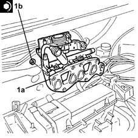
Applies to: engines: 1.3 JTD; all production periods
1. Tighten the cylinder head bolts (1a) to the recommended torque using the angular tightening tool (1b).
| Fastening | Component | Ø | Value (daNm) |
|---|---|---|---|---|
1a | Bolt | CYLINDER HEAD | M10 | (Engine crankcase side) 3.8 ÷ 4.2 + 90? + 90 ? |
| Name | Country |
|---|---|---|
1b | Protractor | 1.860.942.000 |
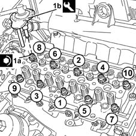
Applies to: engines: 1.2 8v; all production periods
Connect the one-way valve to the brake servo and secure the pipe using the collar.
Secure the electrical wiring using the clips behind the intake manifold.
Connect the high tension leads to the spark plugs.
Connect the coolant supply pipe to the climate control system heater to the thermostat and tighten the collar.
Connect the electrical connection to the engine coolant temperature sensor.
Place the wiring duct pipe bracket in its housing and tighten the nuts.
Place the wiring ducting ppe back in its housing and connect the electrical connections to the injectors.
Connect the oil vapour recovery pipe to the tappet cover.
Connect the electrical connections to the ignition coils.
Secure the injector wiring duct to the slots on the cam cover using the clips.
Connect the electrical connections to the fuel injection/ignition control unit.
Connect the electrical connection to the inlet fuel vapour enabling solenoid valve.
Connect the rapid attachment coupling for the fuel vapour recovery pipe. solenoid side.
Connect the electrical connection to the intake air temperature/pressure sensor.
Connect the earth lead to the throttle body and bolt in place.
Connect the engine idle actuator electrical connection.
Connect the electrical connection to the butterfly position sensor.
Connect the rapid attachment for the fuel supply pipe.
Refit the accelerator control cable and secure to the bracket.
Connect the accelerator control cable to the throttle valve
Place the cam angle sensor back in its housing and fix it using the bolt.
Connect the electrical connection for the rpm sensor.
Place the electrical wiring back in its housing and connect the electrical connections to the engine oil pressure warning light switch.
Connect the upper coolant inlet hose to the radiator, thermostat side, and tighten the band.
Proceed with refitting 1072C16 exhaust manifold with catalytic converter - r r .
Proceed with refitting 1072C44 exhaust manifold heat shield on bulkhead - r+r .
Proceed with the refitting 1068A10 accelerator pedal control - check, adjust if necessary and lubricate
Proceed with refitting 1048A10 air cleaner filtering element - replace .
Proceed with refitting 5530B52 Battery DRIP TRAY/SUPPORT - R.R. .
Proceed with refitting 5530B10 battery - r+r .
Refill the engine cooling system with coolant 0010T20 coolant change .
Remove the car from the ramps.
Applies to: engines: 1.3 JTD; all production periods
1. Fit the third bolt fixing the timing cover to the cylinder head, then tighten the three bolts fixing the timing cover to the cylinder head to the recommended torque.
| Fastening | Component | Ø | Value (daNm) |
|---|---|---|---|---|
1 | Bolt | TIMING COVER | M6 | 0.8 ÷ 1.0 |
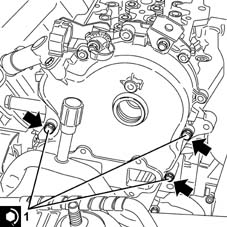
Applies to: engines: 1.3 JTD; all production periods
The non alignment between the cylinder head and engine block should not exceed the recommended value.
| Measurement | Value | |
|---|---|---|---|
- | Cylinder head-cylinder block/crankcase non alignment (mm) | 0.1 |
Place the turbocharger complete with catalytic converter in position.
Tighten the bolts fixing the catalytic converter mounting bracket to the manual gearbox/engine connecting bracket.
Refit the rigid exhaust pipe section between the catalytic converter and the silencer and secure it using the collar.
Tighten the nuts fastening the rigid section of the exhaust pipe between the catalytic converter and the silencer, silencer side.
Place a new gasket between the engine block and the turbocharger engine oil return pipe.
1. Tighten the bolt fixing the enigne oil return pipe from the turbocharger, engine crankcase side, to the specified torque.
| Fastening | Component | Ø | Value (daNm) |
|---|---|---|---|---|
1 | Bolt | OIL RETURN PIPE FROM TURBO | M6 | (Turbocharger/engine crankcase side) 0.8 ÷ 1.0 |
2. Connect the air supply pipe between the turbocharger and the heat exchanger (2a), complete with gasket (2b), turbocharger side and secure it using the bolts (2c).
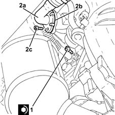
Applies to: engines: 1.3 JTD; all production periods
1. Tighten the nuts fixing the turbocharger to the exhaust manifold to the recommended torque.
| Fastening | Component | Ø | Value (daNm) |
|---|---|---|---|---|
1 | Nut | TURBOCHARGER | M8 | (Exhaust manifold side) 2.3 ÷ 2.8 |
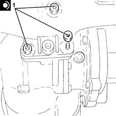
Applies to: engines: 1.3 JTD; all production periods
Tighten the bolt fixing the timing chain fixed plate to the cylinder head.
Tighten the bolt fixing the water/exhaust gas heat exchanger for the E.G.R. system to the cylinder block/crankcase.
Connect the coolant inlet and outlet pipes to the climate control system heater and tighten the bands.
Connect the condensed engine oil recovery pipe, oil vapour separator side and tighten the band.
Connect the engine oil supply pipe to the turbocharger and secure by tightening the connectors to the recommended torque.
| Fastening | Component | Ø | Value (daNm) |
|---|---|---|---|---|
- | Connector | OIL DELIVERY PIPE TO TURBO | M10 | (Turbocharger side/oil filter mounting) 1.1 ÷ 1.3 |
Fit the hose carrying coolant to the engine oil heat exchanger complete with gasket and secure using the band and bolts.
Tighten the bolt fixing the coolant supply pipe to the engine oil heat exchanger to the cylinder block/crankcase.
Place the exhaust manifold heat shield, complete with engine lifting bracket, back in its housing and fix it using the nuts.
Place the engine oil dipstick tube in its seating and fix it using the bolt.
Connect the coolant supply pipe to the climate control system heater, E.G.R. system exhaust gas/water heat exchanger side and tighten the band.
Connect the pipe from the heat exchanger to the air chamber, chamber side and tighten the band.
Place in its seating the air inlet pipe to the turbocharger and tighten the band.
Connect the oil vapour recirculation pipe to the rigid pipe and tighten the band.
Connect the upper coolant inlet hose to the radiator, thermostat side, and tighten the band.
Proceed with refitting 1016B10 single cylinder head extension - change gasket .
Proceed with refitting 1060G90 diesel injection wiring harness - r r .
Proceed with refitting 5530B52 Battery DRIP TRAY/SUPPORT - R.R. .
Proceed with refitting 5530B10 battery - r+r .
Refill the engine cooling system with coolant 0010T20 coolant change .
Proceed with refitting 7055B91 Right front WHEEL ARCH LINER - R.R. .
Proceed with refitting 7055B66 Engine compartment DUST SHIELD protection in right front wheel arch - R.R. .
Proceed with refitting .
Proceed with refitting 4450B04 right front wheel r r .
Fill the air conditioner coolant circuit 0010T84 coolant for air conditioning system dehydrate and recharge .
Remove the car from the ramps.
Topics linked from this page (32)
- 0010T20 coolant change
- 0010T84 coolant for air conditioning system dehydrate and recharge
- 1008A46 cam shaft left rigid mount - r r
- 1008B10 power unit front mount (timing side) flexible block - replace
- 1016B10 single cylinder head extension - change gasket
- 1016B12 single cylinder head extension - r r with timing belt removed - replace
- 1032B10 toothed timing belt - r + r for timing adjustment or replacement
- 1032D12 timing system protective cover(s) - r + r
- 1048A10 air cleaner filtering element - replace
- 1056B60 single fuel manifold pipe, with injectors - r + r
- 1060G90 diesel injection wiring harness - r r
- 1068A10 accelerator pedal control - check, adjust if necessary and lubricate
- 1072C16 exhaust manifold with catalytic converter - r r
- 1072C44 exhaust manifold heat shield on bulkhead - r+r
- 1092A10 Crankshaft services PULLEY - R.R.
- 1092B40 air conditioner compressor/alternator drive belt - r + r
- 4450B04 right front wheel r r
- 5530B10 battery - r+r
- 5530B52 Battery DRIP TRAY/SUPPORT - R.R.
- 7055B66 Engine compartment DUST SHIELD protection in right front wheel arch - R.R.
- 7055B91 Right front WHEEL ARCH LINER - R.R.
- A30 Ignition 'coil
- C60 Injection ECU earth
- K30 Engine oil pressure sensor (switch)
- K36 Engine temperature sender unit
- K43 Integrated air temperature sensor
- K46 Rpm sensor
- K56 Throttle position sensor
- L10 Fuel vapour recovery solenoid
- M10 Engine management control unit
- N70 Injector
- N74 Idle actuator
Topics that link to this page (7)
- B13 ENGINE STARTS WITH DIFFICULTY'
- K27 ENGINE COOLANT OVERHEATING SIGNALLED BY THE INSTRUMENT
- K29 ENGINE COOLANT OVERHEATING SIGNALLED BY INSTRUMENT - WITH VAPOURS VISIBLE
- X08 ENGINE COOLANT CONSUMPTION
- X10 ENGINE COOLANT LEAKS
- 1028H10 connecting rod and piston set - r r
- 1028H20 piston with connecting rod - r r